Sample creation
Synthesis
Create new samples with Wave, Drum, Pluck, Partials, Noise Bank, Dust, FM, Subharmonic, Spline and Bloom. Rebuild a saved sample with Resynth, combine source traits with Hybrid, or convolve two recordings. Events can compose multiple excitations into one file. The Synth tool is in the Sample group, available in every instrument mode. Its WAV files can be used by any of Thru's fifteen playback engines.
Make a first sound
- Finish any recording or clip transition. Open Capture + Menu → Sample → Synth.
- On Synth Setup, choose TYPE, LEN and ROOT. TYPE runs from basic sound generation to sample processing: WAVE, DRUM, PLUCK, PART, NOISE, DUST, FM, SUB, SPLN, BLOOM, RSYN, HYBR and CONV. A new workspace starts from the focused part’s root and scale.
- Press Move’s physical Loop key to audition the rendered sound. Press Menu to choose Sound, Motion or Output. Up/Down and the main encoder move through the pages within that group.
- For Spline, change
PTSandEVOLon its sound page. Thru renders the new settings in the background after you stop turning. The previous preview stays available until the new render is ready. - Press a Track button to choose the destination lane. Press Record when the render is ready, or click the main encoder and choose Save & Load. The new WAV replaces that lane's source through the usual loading transition.
Play retains its clip-transport role. Loop toggles Synth preview. Preview uses the shared PREV level on Mix / Rec and plays directly, outside the instrument's effects and part mixer. Menu opens the Synth group overview. Back returns to that overview; a second Back stops preview and returns to the Sample page list. Exit Synth before making an audio or performance recording. Each generator keeps its own settings while Thru remains open; switching TYPE and returning restores them. Save a WAV to retain a recipe after leaving Thru.
Synth navigation
Use Synth to design material, then commit a sample for Thru's playback engines. After saving, keep shaping the source to make another variation. Synth settings remain separate from the playing clip and instrument parameters.
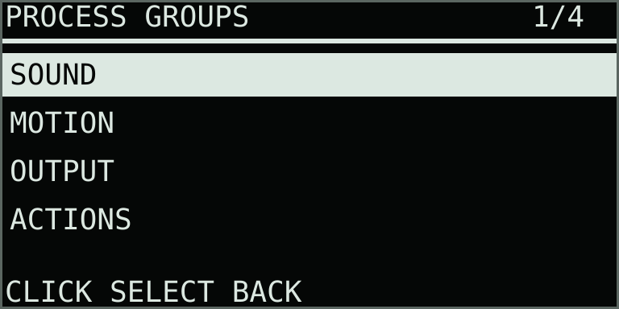
| Display | What it controls |
|---|---|
| SOUND | TYPE, file setup, the selected generator's sound controls, source files and component editors. |
| MOTION | Shared LFO, four curve rows and bounded randomization. Unused targets show squares. |
| OUTPUT | Preview waveform, completed duration, filename, render status and destination lane. |
| ACTIONS | Render, preview, name, save, recipe recall, source selection, mutation and Clean. Also available by clicking the main encoder on any page. |
Record saves the completed render and loads it into the selected lane. Shift + Record saves a copy without loading it. The Record light brightens when the current render is ready. These shortcuts commit the generated WAV; leave Synth to record audio from the inputs or a performance clip. Capture + Menu returns to Thru's main page overview.
Synth Setup

| Knob | Display | What it controls |
|---|---|---|
| 1 | TYPE | Generator, in dial order: WAVE, DRUM, PLUCK, PART (Partials), NOISE (Noise Bank), DUST, FM, SUB (Subharmonic), SPLN (Spline), BLOOM, RSYN (Resynth), HYBR (Hybrid) and CONV (Convolution). Each has its own sound controls and curves. |
| 2 | LEN | Length of the new file, 0.04–12 seconds. Convolution labels this MAX: it limits the output, including the tail. A shorter result keeps its natural duration. |
| 3 | ROOT | Root pitch, C1–C7. In Resynth, Convolution, Drum, Pluck and Hybrid this is the output file’s pitch reference. Subharmonic uses ROOT as its base frequency. Use Resynth TUNE to shift the sound or Drum TUNE to set its actual frequency. Match the instrument’s root for predictable keyboard playback. |
| 4 | WID | Stereo width. Spline separates waveform shapes; Wave separates detuned oscillators and noise; Bloom spreads packets; Resynth scales the source’s stereo width; Partials and Noise Bank spread components or bands; FM separates detuned voices; Pluck separates its strings; Subharmonic spreads harmonic and subharmonic components; Hybrid scales the mixed source image. Dust spreads individual artifacts and its noise bed. Events can also spread individual excitations. Zero is mono. |
| 5 | ATK | Attack, 0–2000 ms. Available for one-shot files. Attack and release shorten proportionally if they cannot fit LEN. |
| 6 | REL | Release, 0–4000 ms. Available for one-shot files. |
| 7 | LVL | Output peak level. At 100%, the generated file peaks at −1 dBFS. |
| 8 | SEED | Repeatable random identity, 0–65535. Unavailable when the chosen type has no active random process. A recipe and seed reproduce the same audio at the same sample rate. |
Wave
Wave creates clean sine, triangle, saw and square/pulse sources. It starts with a single tone, an open filter, and detuning, sub and noise off. Optional modulation and curves add movement.
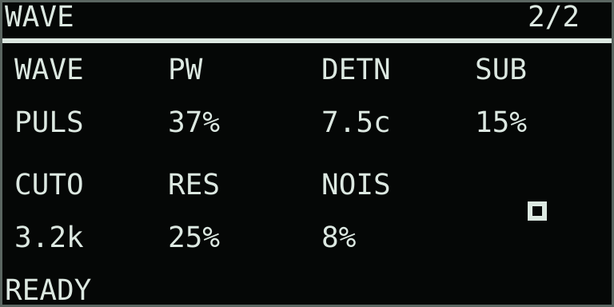
| Knob | Display | What it controls |
|---|---|---|
| 1 | WAVE | SINE, TRI, SAW or PULS. Saw and pulse sources are band-limited during generation. |
| 2 | PW | Pulse width, 5–95%. Available for PULS. |
| 3 | DETN | Detune the second oscillator by 0–50 cents. Zero keeps both oscillators aligned. |
| 4 | SUB | Level of a sine oscillator one octave below ROOT. |
| 5 | CUTO | Low-pass cutoff, 20 Hz–20 kHz. The open setting bypasses filtering when no cutoff movement is applied. |
| 6 | RES | Filter resonance. Unavailable while the filter is bypassed. |
| 7 | NOIS | Level of the optional noise source. Zero adds no noise. |
| 8 | □ | Reserved. |
WID on Setup separates the two detuned oscillator signals and the noise channels. It is unavailable when both DETN and NOIS are zero. The Wave curve rows are Pitch / Pulse Width / Cutoff / Level; pulse-width motion is unavailable for the other waveforms.
Drum
DRUM creates one synthesized percussion hit, ready to save as a sample. Choose a model, shape the hit, audition, then press Record to commit it to the selected lane. The loaded sample can use any playback engine and sequence like other lane sources.
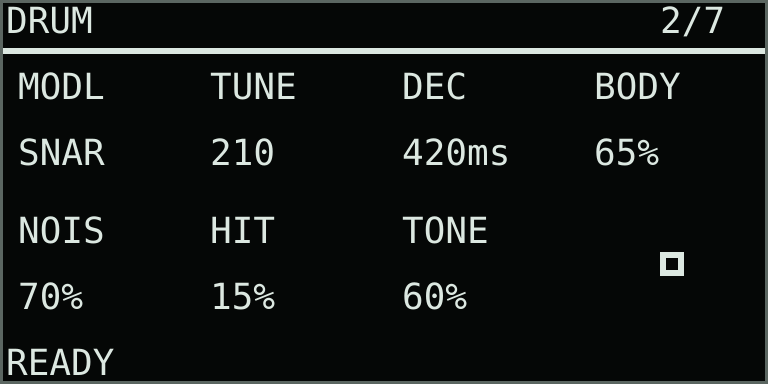
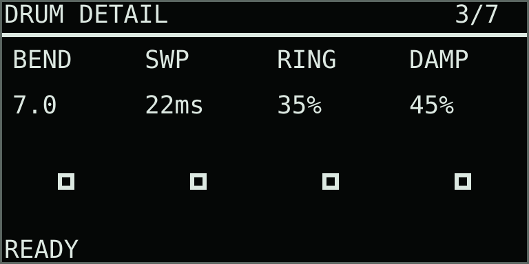
| Knob | Display | What it controls |
|---|---|---|
| 1 | MODL | KICK, SNAR, TOM, BELL, HAT, CRSH, MEMB, MODAL, MEDM, CBAS or FMD. Changing model loads a suitable starting sound for that model. Common file setup and curves are retained. |
| 2 | TUNE / SPED | Tuning: actual model frequency in Hz. Medium shows SPED, the propagation speed in metres per second; SPED and SIZE set its register together. ROOT remains the saved sample’s keyboard reference. |
| 3 | DEC | Decay in milliseconds. Its available range follows the model. LEN limits the saved file; a shorter LEN can crop a long decay. |
| 4 | BODY / MASS / SIZE | Body strength or metal-mode density. Concert Bass uses BODY for the pressure response. Membrane Kick uses BODY for fundamental punch. Modal shows MASS: loading changes the body’s modal balance. Medium shows SIZE: the cube’s half extent, 0.02–4 metres. |
| 5 | NOIS / IRRG | Noise or variation. Texture, snare wires, bell noise, cymbal wash or a short Medium noise impulse. Modal shows IRRG: irregularity between resonances. Concert Bass shows AIR. Unavailable for Tom and Membrane Kick. |
| 6 | HIT | Attack component: click, stick, chick or onset shape, depending on the model. Concert Bass shows IMPT, the force of the beater. |
| 7 | TONE | Overall brightness and the model’s attack/noise color. |
| 8 | □ | Reserved. Drive, bias and compression are together on Drum Color. |
| Knob | Display | What it controls |
|---|---|---|
| 1 | BEND / SIZE | Initial pitch excursion for Kick, Snare, Tom, Bell and Membrane Kick. Concert Bass shows SIZE: move between a focused kettle-like head and a large taiko-like body. |
| 2 | SWP / TENS | Pitch-excursion time for those models. Concert Bass shows TENS, normalized head tension. |
| 3 | RING / COUP / DISP / BLOM | Harmonics, shell ring, bell interval, hat sizzle or cymbal bell. Modal shows COUP: movement and beating between modes. Medium shows DISP: frequency-dependent wave travel. Concert Bass shows BLOM, the low-body bloom. Unavailable for Membrane Kick. |
| 4 | DAMP | Tail, wire tension, body damping or air reduction, depending on the model. |
| 5 | SHAP / MATL / EXCT / ART | Membrane shape, Modal material, Medium exciter or Concert Bass articulation: CNTR, MUTE or RIM. Reserved for the first six models. |
| 6 | X / POS | Horizontal strike or actuator position in the physical body, 0–100%. Concert Bass shows POS, the strike position. Reserved for the first six models. |
| 7 | Y / SHEL | Second strike or actuator position, 0–100%. Concert Bass shows SHEL, shell resonance. Reserved for the first six models. |
| 8 | AMNT / BODS / Z / RLEV | Membrane shape amount; Modal body count, 4–8; or Medium excitation depth, 0–100%. Concert Bass shows RLEV for rim level, available with ART RIM. Reserved for the first six models. |
| Display | Model | TUNE / SPED range | DEC range |
|---|---|---|---|
| KICK | Pitch-swept low body, click and texture | 20–180 Hz | 30–8000 ms |
| SNAR | Modal shell, wires and impact | 70–420 Hz | 30–3000 ms |
| TOM | Membrane, shell and stick | 35–180 Hz | 40–4000 ms |
| BELL | Coupled inharmonic tones, body and strike | 180–2400 Hz | 30–2000 ms |
| HAT | Closed metal hit, wash and chick | 320–3200 Hz | 30–1000 ms |
| CRSH | Modal metal, wash and bell | 180–2400 Hz | 80–8000 ms |
| MEMB | Shared membrane with sixteen stereo pickups | 25–90 Hz | 80–6000 ms |
| MODAL | Four to eight material bodies sharing 96 modes | 30–1200 Hz | 50–12000 ms |
| MEDM | Eight-node waveguide body | 20–2000 m/s | 50–12000 ms |
| FMD | FM percussion with pitch, noise and transient envelopes | 20–3200 Hz | 30–8000 ms |
| CBAS | Large pressure-based concert bass drum | 24–96 Hz | 150–8000 ms |
WID controls stereo spread; zero produces identical left/right audio. Native model envelopes shape the hit, with ATK/REL controlling file edges. With Events OFF, Drum uses only the Level curve and Level modulation. With Events on, its rows become Pitch / Density / Lifetime / Level. BEND and SWP still shape each hit’s pitch transient.
Membrane Kick
MEMB strikes one shared twelve-mode membrane and mixes its sixteen physical pickups to stereo. Choose CIRC, ELLIP, SQUAR, TRI or IRREG with SHAP. AMNT moves from the circular body toward that shape. X/Y place the strike: the center favors the fundamental, while edge positions excite more asymmetric upper modes. Positions remain inside the membrane.
BODY sets fundamental punch; HIT sets the beater click. BEND and SWP control its downward pitch trajectory, and DAMP shortens upper modes. CHAR drives the local pickups before mixing. NOIS and RING are unavailable.
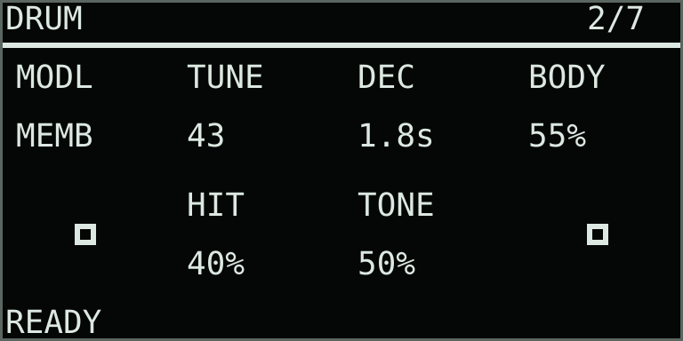
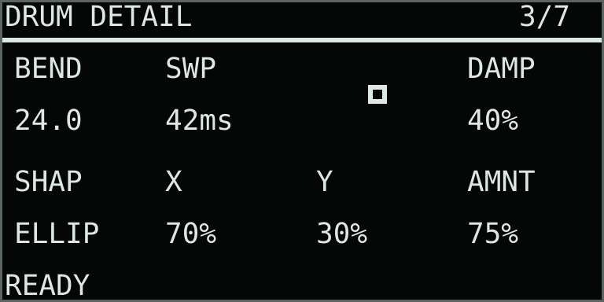
Modal
MODAL excites four to eight related bodies, sharing a fixed pool of 96 resonant modes. BODS sets the body count: fewer bodies give each one more detail. Their individual outputs spread across stereo. X/Y move their actuator contacts; MASS changes loading, IRRG changes modal variation, COUP adds beating, and DAMP removes energy. TUNE sets the first body’s reference mode; the other bodies retain their related tuning. DEC scales that mode’s reference decay and the relative decays of the ensemble. SEED produces repeatable body variations.
| MATL | Material starting point |
|---|---|
| DEEP / TIER / BROAD / BRGHT | Deep, tiered, broad and bright bronze. |
| CARBN / GLASS / ALUM / SPRC | Carbon laminate, glass, aluminum and spruce plates. |
| STEEL / PORC / EARTH | Steel shell, porcelain and porous earthenware. |
| SKIN / LOAD / COUP / CAV / LOOSE | Tensioned skin, loaded, coupled, cavity and loose membranes. |
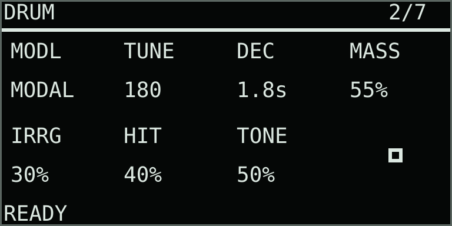
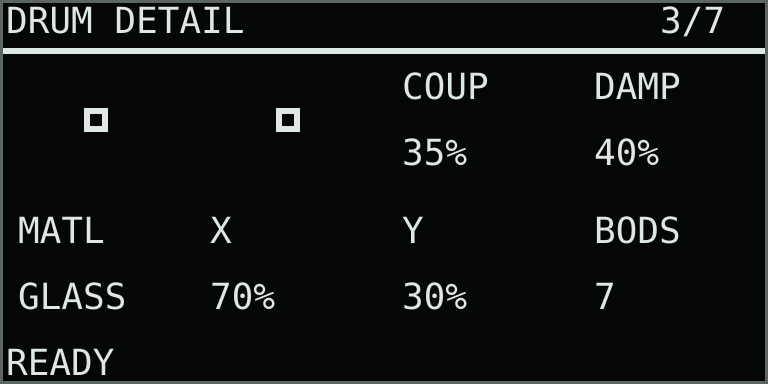
Medium
MEDM excites one cube-shaped waveguide body. Waves travel between eight connected nodes. SPED and SIZE set the body’s register; DEC, DAMP and DISP shape its ringing and spectral spread. EXCT chooses HIT, BOW, REED or AIR. Each render starts one finite gesture; there is no continuous autonomous sequencer. NOIS adds a short windowed noise excitation, while HIT sets the initial force. X/Y/Z distribute that force between the cube’s corners. SEED fixes the noise impulse.
WID spreads the resulting stereo pickups, with zero producing mono. Try longer LEN and DEC for resonant objects or struck textures. A shorter LEN crops the ringing with the file’s release fade. The two tuning controls can move the model through very different registers, so change one at a time while auditioning.
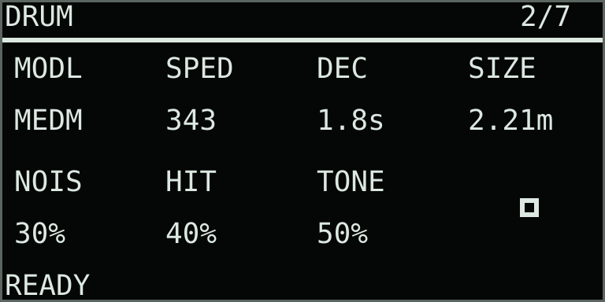
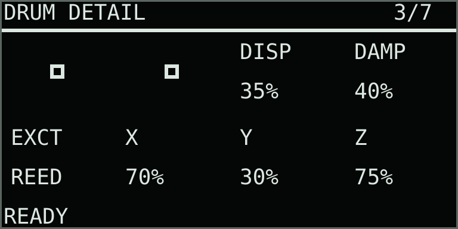
Concert Bass
CBAS builds the mass of a large drum from broad pressure bands, a restrained pitched anchor, air and shell resonance. ART selects CNTR, MUTE or RIM. SIZE moves through concert, kettle-like and taiko-like responses; TENS, POS and HARD change how the head is excited. IMPT sets beater force, BLOM controls the low-pressure bloom and AIR adds the surrounding pressure response.
DEC controls the center strike’s body decay. MUTE uses MDEC and RIM uses RDEC on Drum Attack. RIM also enables RLEV and RTON. Controls that do not affect the selected articulation show squares. Longer sounds need enough LEN to retain the body and tail.
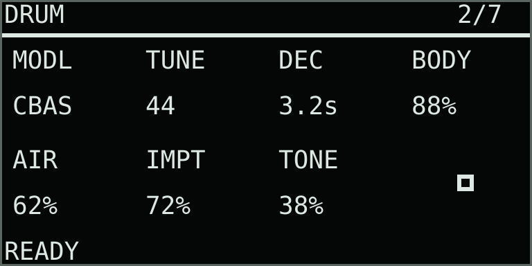
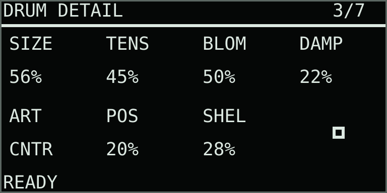
Drum Attack
The third Drum sound page exposes native excitation controls and transient shaping. Parameter names adapt to the chosen model. Try the starting sound with ATK zero, SNAP around 35%, EDGE 0.15 ms and COMP zero on Drum Color before adding drive or compression.
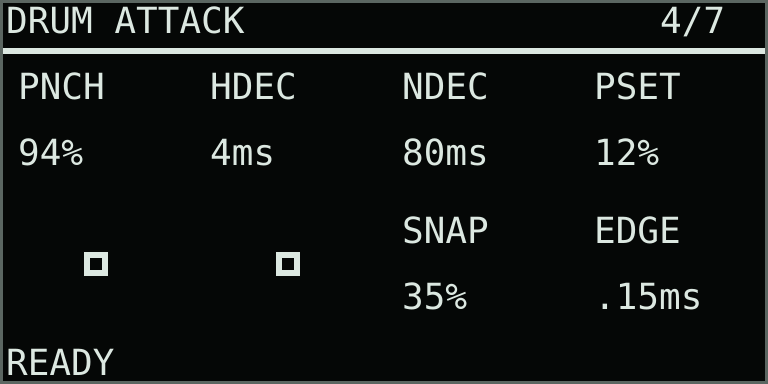
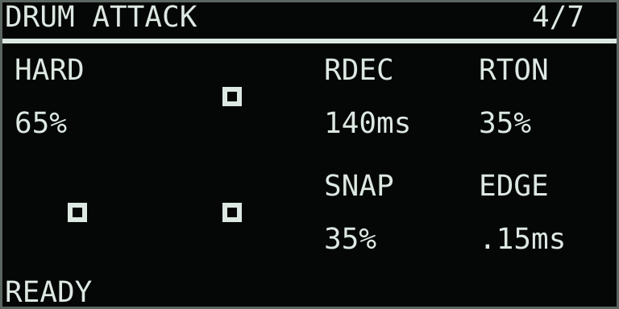
| Knob | Display | What it controls |
|---|---|---|
| 1 | PNCH / SHAP / ATK / TEXT / HARD | Native excitation control: Punch for Kick, Snare and Tom; waveform Shape for Bell; Attack for Hat; Texture for Crash; beater Hardness for Concert Bass; short onset emphasis for FM Drum. Reserved for Membrane Kick, Modal and Medium, whose excitation controls are on their existing pages. |
| 2 | HDEC / BDEC / MDEC | Click decay for Kick, stick decay for Tom, body decay for Bell, the muted decay of Concert Bass, or the FM Drum click decay. Ranges follow the source model. Reserved where unused. |
| 3 | NDEC / WDEC / RDEC | Texture decay for Kick, wire decay for Snare, noise decay for Bell, wash decay for Crash, or rim decay for Concert Bass. FM Drum uses NDEC for its noise tail. Independent of the main body DEC. |
| 4 | PSET / RATL / DETN / ALLO / RTON | Pitch settling for Kick; wire rattle for Snare; detuning for Bell; alloy for Hat and Crash; rim tone for Concert Bass. Reserved where unused. |
| 5–6 | □ | Reserved. BIAS and COMP are on Drum Color. |
| 7 | SNAP | Short onset emphasis across the first few tens of milliseconds. Raises the attack relative to the tail; final LVL still sets file peak level. |
| 8 | EDGE | Click-safe onset fade, 0.05–2 ms. The starting value is 0.15 ms, preserving short beater and click transients. File ATK can apply a slower attack if wanted. |
Loop preview plays the generated file directly. After Save & Load, the instrument’s note envelope also shapes it: try the Sample engine with Amp Envelope ATK at 0 ms to retain the beater attack. BANK has its own per-pad ATK, with a minimum of 1 ms. These playback controls are separate from Synth’s file envelope.
Choose Drum Start in Actions to reload the selected model’s starting sound. Existing saved recipes retain their settings when recalled. The export is still peak-normalized according to LVL: transient shaping changes the attack/tail balance, rather than raising the file above its peak limit. The short EDGE fade also applies to Drum Events, while the ends of gates stay faded.
FM Drum
FMD makes electronic percussion from a carrier, a decaying FM modulator, noise and a short click. Low tuning and a fast pitch drop make kicks; inharmonic ratios and longer FM decay make metallic drums, bells and industrial hits. BODY sets the carrier, NOIS adds the noise tail and HIT adds the click. TONE controls the voice filter. NDEC and HDEC on Drum Attack set the noise and click durations.
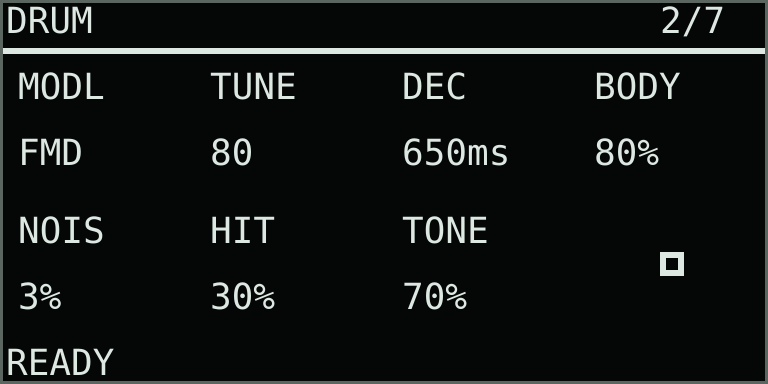
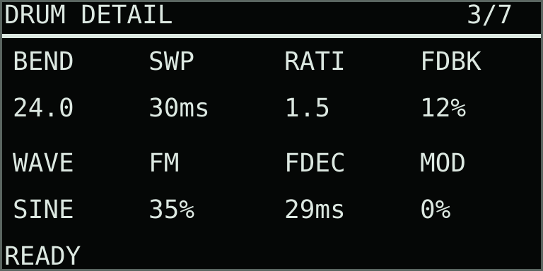
| Knob | Display | What it controls |
|---|---|---|
| 1 | BEND | Initial pitch rise, 0–48 semitones, which settles toward TUNE. |
| 2 | SWP | Pitch settling time, 2–500 ms. |
| 3 | RATI | Modulator frequency ratio, 0.125–16 times the carrier. Integer ratios sound more harmonic; fractional ratios add metal and dissonance. |
| 4 | FDBK | Modulator feedback, 0–100%. Adds roughness before the carrier is shaped. |
| 5 | WAVE | Carrier shape: SINE, TRI, SAW or PULS. |
| 6 | FM | Initial FM depth. Zero gives an unmodulated carrier. |
| 7 | FDEC | FM decay, 2–4000 ms, with finer adjustment at short times. Longer values retain the metallic spectrum into the tail. |
| 8 | MOD | Direct modulator level. Adds its pitched tone beside the carrier. |
Drum Color
The fourth Drum sound page groups drive and compression with offline bit/rate processing. The result is written into the generated WAV; it adds no playback effect to the lane. Start with DRIV 30–50%, COMP low or off, BITS 10–12 and RATE around 16 kHz. Lower bits and rates deliberately add grit and aliasing. TONE and MIX soften or blend that texture.
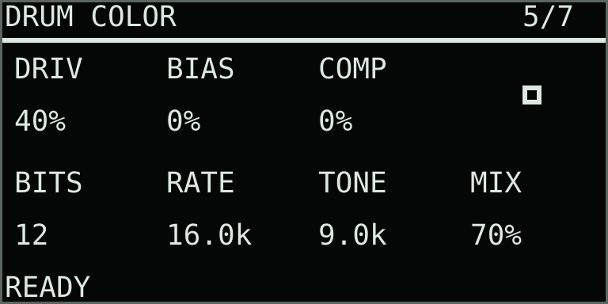
| Knob | Display | What it controls |
|---|---|---|
| 1 | DRIV | Native drive, 0–100%. Saturation raises density relative to the file peak. Zero bypasses drive. |
| 2 | BIAS | Drive asymmetry, −100 to +100%. Available when DRIV is active, except Membrane Kick and Medium which use local nonlinearities. |
| 3 | COMP | Native compression, 0–100%. Starts off to preserve the attack; increase for a more even, dense hit. |
| 4 | □ | Reserved. |
| 5 | BITS | Bit depth, 4–24. The 24-bit setting bypasses quantization. Processing is level-conditioned so every model responds usefully. |
| 6 | RATE | Sample-and-hold rate, 375 Hz up to FULL. FULL bypasses rate reduction. The WAV retains its normal sample rate. |
| 7 | TONE | Post-reduction low-pass filter, 20 Hz to OPEN. Reduces the added high-frequency edge. |
| 8 | MIX | Blend the bit/rate/tone stage with its unprocessed input. DRIV, BIAS and COMP apply before this blend. Zero bypasses the reduction stage. |
Color starts neutral and protected from mutation. Unprotect its controls to include them in randomization. Settings carry across Drum model changes. Clean resets Color, drive, bias, compression and SNAP. Existing saved recipes retain their sound. LVL still sets the output peak; processing increases density or changes texture rather than exceeding the peak ceiling.
Pluck
PLUCK excites a pair of tuned string delay lines. Events starts enabled for a small field of plucks. Set Events MODE to OFF for one sustained pluck. DEC sets the string’s decay; LEN bounds the complete saved file. ROOT is the file’s keyboard reference, while TUNE sets the string frequency.
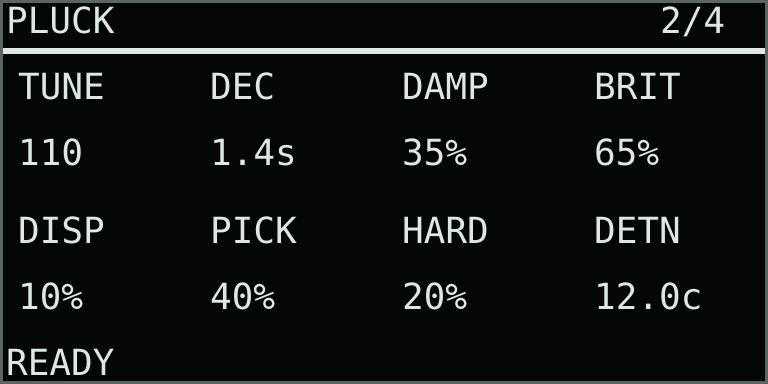
| Knob | Display | What it controls |
|---|---|---|
| 1 | TUNE | String frequency, 20–2000 Hz. |
| 2 | DEC | String decay, 30–8000 ms. Damping can shorten the bright part of the tail. |
| 3 | DAMP | Feedback damping, 0–98%. Higher values soften the recirculating string. |
| 4 | BRIT | Brightness of the initial excitation and output tone. |
| 5 | DISP | Dispersion: changes the relative timing of frequencies in the string. |
| 6 | PICK | Pluck position: changes which harmonics are emphasized by the excitation. |
| 7 | HARD | Nonlinear string hardness. Zero removes this added nonlinear stage. |
| 8 | DETN | Detuning between the strings, 0–50 cents. WID is available with detuning or event panning. |
The curve rows are Pitch / Damping / Brightness / Level. With Events enabled, their values are sampled for each pluck, while Level follows the full file.
Partials
PART builds a continuous sound from up to 32 sine components. Each has its own frequency ratio and signed level. Start with harmonic components, edit an inharmonic spectrum, or use motion to make the tuning evolve through the saved file. Bloom instead creates separate packets with individual envelopes.
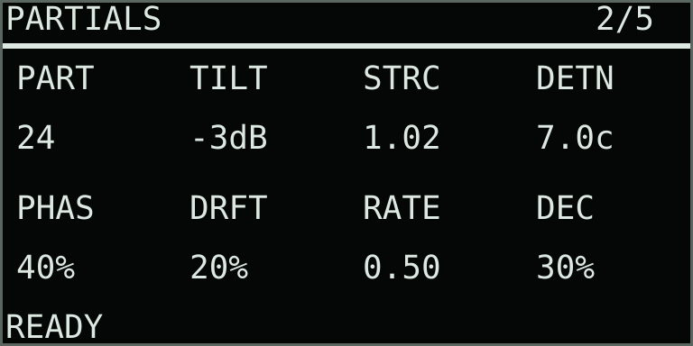
| Knob | Display | What it controls |
|---|---|---|
| 1 | PART | Component count, 1–32. Components above the count remain editable but are silent. |
| 2 | TILT | Spectral level change, −24 to +12 dB per octave of component frequency ratio, added to the individual levels. |
| 3 | STRC | Stretch the component ratios with an exponent of 0.25–4. At 1 the authored ratios are unchanged; larger values spread them farther apart. |
| 4 | DETN | Fixed, seeded component detuning, up to ±30 cents. |
| 5 | PHAS | Seeded initial phase variation, from aligned sine phases to a full cycle. |
| 6 | DRFT | Independent smooth pitch drift per component, up to ±30 cents. |
| 7 | RATE | Drift speed, 0.01–20 Hz. Available when DRFT is above zero. |
| 8 | DEC | Gradually fade higher component numbers over the file, while the lowest component remains steady. |
WID spreads components across stereo. The curve rows are Pitch / Count / Stretch / Level. Stretch offsets use octaves: +1 doubles the STRC exponent and −1 halves it. Components near the upper frequency limit fade out.
Noise Bank
NOISE creates up to 32 tuned bands of filtered noise. Each band has its own center ratio and signed level. Narrow bands create pitched textures; wider bands, moving centers and unfiltered noise make broader sounds. Every render is repeatable from its seed.
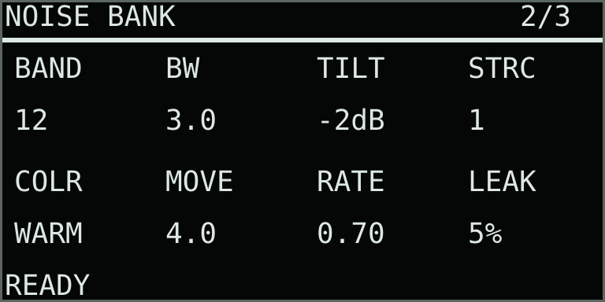
| Knob | Display | What it controls |
|---|---|---|
| 1 | BAND | Band count, 1–32. Fractional values fade in the next band. |
| 2 | BW | Band width, 0.1–48 semitones. Small settings emphasize the individual center frequencies. |
| 3 | TILT | Spectral level change, −24 to +12 dB per octave of center ratio. |
| 4 | STRC | Stretch band-center ratios with an exponent of 0.25–4. |
| 5 | COLR | Noise color: WHT is white noise, WARM softens the high end, and DARK emphasizes slower variation. |
| 6 | MOVE | Independent smooth random movement of each center, up to ±24 semitones. |
| 7 | RATE | Movement speed, 0.01–20 Hz. Available when MOVE or its curve/modulation produces movement. |
| 8 | LEAK | Mix in unfiltered white noise, independently of the band levels. |
WID spreads the bands across stereo. The curve rows are Pitch / Bandwidth / Motion / Level. Bandwidth offsets use octaves: +1 doubles BW and −1 halves it. Motion offsets add semitones to MOVE.
Edit components and bands
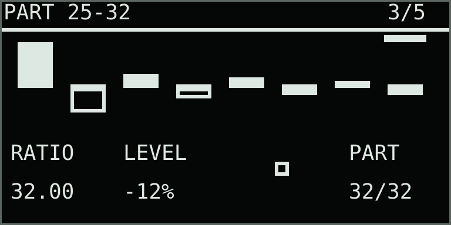
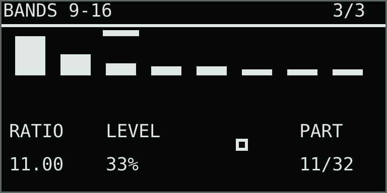
Open the component editor, then select a pad from top-left, moving right and then down. The screen shows the eight components in that pad row. Dial 5 sets RATIO, 1–64 times ROOT; hold Shift for finer ratio edits. Dial 6 sets signed LEVEL, −100% to +100%. Dial 8 moves through all 32 components, including across rows. Dial 7 is reserved. Unlike Bloom's four alternative spectra, all four rows belong to one bank.
Delete/X + pad mutes a component. Copy + pad copies its ratio and level; Shift + pad pastes them. A grey pad has no level or is above the active count. Editing a component above PART or BAND retains it for use when the count increases. On other pages the pads edit curves.
Dust
DUST creates crackles, clicks, static, chopped noise and digital-error textures from scratch. Choose a mode, audition with Loop, then save the result as a sample. These sounds deliberately include sharp edges. EDGE softens individual events; TONE darkens their high-frequency content. SEED reproduces a texture or makes another variation.
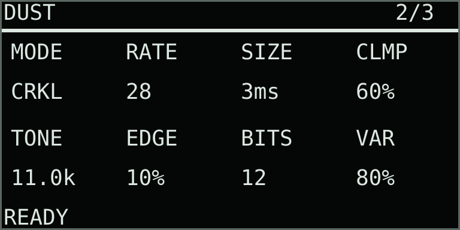
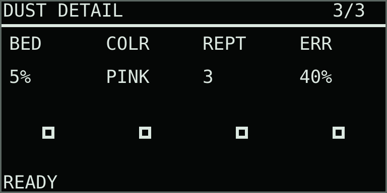
| Display | Mode | What it produces |
|---|---|---|
| DUST | Dust | Sparse short impulses, from fine ticks to heavier specks. |
| CRKL | Crackle | Asymmetric pops with a brief body and noisy edge. CLMP gathers them into busy and quiet regions. |
| STAT | Static | Continuous noise interrupted by short level cuts. RATE and SIZE control those interruptions. BED is unavailable. |
| CLIK | Clicks | Bipolar pulses. SIZE sets their width; EDGE softens both the outside edges and the change in polarity. |
| CUTS | Cuts | Short openings in a noise source. Low rates leave gaps; high rates and longer durations form dense, chopped textures. |
| DATA | Data error | Repeating digital-word patterns, abrupt steps and occasional missing words. REPT and ERR move between repeated blocks and changing corruption. |
| Knob | Display | What it controls |
|---|---|---|
| 1 | MODE | DUST, CRKL, STAT, CLIK, CUTS or DATA. Starts protected from randomization. |
| 2 | RATE | Average event rate, 0.1–2000 arrivals per second. Events are irregular; this is not a musical pitch or a clock division. |
| 3 | SIZE | Individual event duration, 0.02–500 ms. Very short settings resolve to at least one sample. In Static, sets interruption duration. |
| 4 | CLMP | Clustering, 0–100%. Higher values concentrate events into bursts with quieter gaps. |
| 5 | TONE | Low-pass tone, 20 Hz–20 kHz. High settings retain sharp clicks; lower values give darker pops and rumble. |
| 6 | EDGE | Event-edge softness, 0–100% of the available edge region. Zero keeps hard cuts. This is separate from the complete file’s ATK and REL. |
| 7 | BITS | Internal bit depth, 2–24. Lower values add quantization and stepped levels. Input conditioning keeps quiet materials usable at low bit depths. The saved WAV remains 32-bit float. |
| 8 | VAR | Event level and duration variation, 0–100%. Zero keeps their nominal size and strength; arrival times remain irregular. |
| Knob | Display | What it controls |
|---|---|---|
| 1 | BED | Continuous noise-bed level underneath the artifacts. Reserved in Static, which already uses a continuous bed. |
| 2 | COLR | Noise color: WHT, PINK, BRWN or BLUE. Pink and brown emphasize lower frequencies; blue emphasizes sharper differences. Also colors the optional bed. Reserved in Data while BED is zero. |
| 3 | REPT | Repeated segments per arrival, 1–16, with a short gap between them. In Data, repeats the captured digital pattern unless ERR changes it. |
| 4 | ERR | Error-pattern variation, 0–100%. Available only in DATA. Higher values replace more repeated blocks with altered patterns. |
| 5–8 | □ | Reserved. |
The four curve rows are Density / Size / Tone / Level. Density varies RATE over ±4 octaves; Size varies event duration over ±4 octaves; Tone varies cutoff over ±4 octaves. Their LFO destinations use the same meanings. Density curves use continuous values rather than scale notes. ROOT is the saved file’s keyboard reference, not a source oscillator. WID spreads artifacts and noise across stereo. LVL sets the final file peak.
Try low RATE and short SIZE for isolated specks; CRKL with moderate CLMP for clustered pops; STAT with low BITS for rough static; or DATA with REPT around 4–8 and ERR raised for broken digital loops. Shift + Loop makes a bounded variation. Saving and Open Source Recipe retain the complete sound and seed.
FM
FM shapes a sine carrier with one or two sine modulators. Ratios follow ROOT, so harmonic and fractional relationships remain consistent when changing the base pitch. The render uses 4× oversampling and filtered downsampling; very high modulator frequencies and indices are bounded to reduce aliasing.
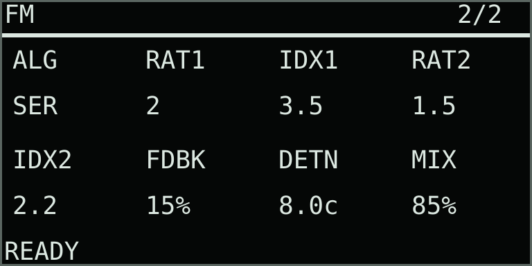
| Knob | Display | What it controls |
|---|---|---|
| 1 | ALG | Operator routing: 2OP, SER, PAR or RING. See the routing table below. |
| 2 | RAT1 | Modulator 1 frequency ratio, 0.125–32 times the carrier. |
| 3 | IDX1 | Modulator 1 phase-modulation depth, 0–12 radians. |
| 4 | RAT2 | Modulator 2 frequency ratio, 0.125–32 times the carrier. Unavailable in 2OP. |
| 5 | IDX2 | Modulator 2 depth, 0–12. In RING this blends toward full multiplication. Unavailable in 2OP. |
| 6 | FDBK | Smoothed self-feedback of modulator 1, 0–90%. |
| 7 | DETN | Spread two copies of the complete FM voice by up to 30 cents total. WID separates the copies in stereo; at zero width they are mixed to mono. |
| 8 | MIX | Blend from the sine carrier to the processed FM sound. |
| Display | What it controls |
|---|---|
| 2OP | Modulator 1 changes the carrier's phase. |
| SER | Modulator 2 changes modulator 1, which changes the carrier. |
| PAR | Both modulators change the carrier in parallel. |
| RING | Modulator 1 changes the carrier; modulator 2 multiplies the resulting sound. IDX2 sets the multiplication amount. |
The curve rows are Pitch / Index 1 / Index 2 / Level. Index offsets add to IDX1 and IDX2. WID is unavailable when DETN is zero. SEED is needed only if random modulation is active.
Subharmonic
SUB is an additive bank of clean sine components, combining harmonics above ROOT with subharmonics below it. It starts with eight harmonics, four subharmonics and a gentle lower-layer blend. Detuning and drift start off.
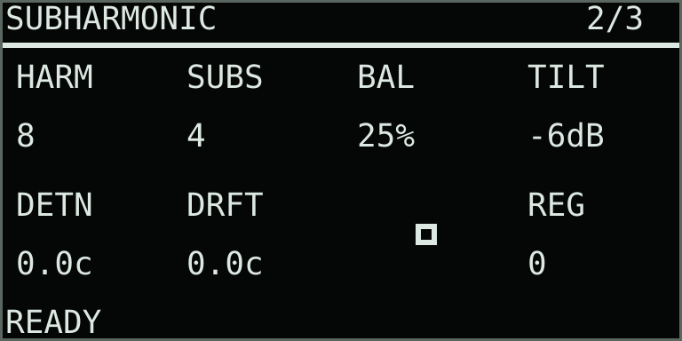
| Knob | Display | What it controls |
|---|---|---|
| 1 | HARM | Number of upper harmonic components, 1–16, including the fundamental. |
| 2 | SUBS | Number of lower subharmonic components, 0–16. Dividers start at 2, 3, 4 and so on. |
| 3 | BAL | Balance between upper harmonics and lower subharmonics. Zero is harmonics; 100% is subharmonics. Unavailable with SUBS zero. |
| 4 | TILT | Component slope, −18 to +6 dB per doubling of multiplier or divider. Negative values soften the upper harmonics and deepest undertones. |
| 5 | DETN | Optional fixed detuning, 0–30 cents per component. Zero keeps exact ratios. |
| 6 | DRFT | Optional smooth frequency movement, 0–30 cents. Zero keeps tuning still. |
| 7 | RATE | Speed of the optional drift, 0.01–4 Hz. Unavailable with DRFT zero. |
| 8 | REG | Whole-bank register, −2 to +2 octaves relative to ROOT. |
The component editor uses all 32 pads. The upper two rows edit sixteen harmonic multipliers; the lower two rows edit sixteen subharmonic dividers. Select a pad, turn knob 5 to change its RATIO or DIV, and knob 6 to change its signed LEVEL. Knob 8 moves between components. Delete/X + pad silences a component; Copy + pad and Shift + pad copy and paste its settings.
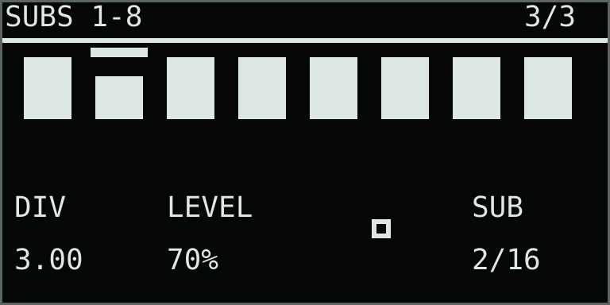
WID spreads components across stereo. Frequencies below 5 Hz are omitted, with a gradual fade into the audible range; they are not moved to a different octave. The curve rows are Pitch / Sub Balance / Tilt / Level. All components keep running continuously; there is no random voice gating, pulse blend or folding.
Spline sound controls
Spline draws alternating positive and negative waveform halves through random points, then smoothly changes one waveform into the next. ROOT controls cycle pitch; the following controls shape its changing character.
| Knob | Display | What it controls |
|---|---|---|
| 1 | PTS | Points within each waveform half, 1–32. More points introduce finer internal detail. |
| 2 | EVOL | Evolution time, 1–4096 waveform cycles between successive shapes. Higher values change the timbre more slowly. |
| 3 | DRFT | Pitch-drift depth, 0–12 semitones around ROOT and the Pitch curve. |
| 4 | DRT | Pitch-drift time, 1–1000 ms between smoothly connected random targets. |
| 5 | CURV | Waveform curvature. Zero joins internal waveform points with straight lines; 100% uses smooth curves. |
| 6 | DYN | Random level variation between evolving waveforms. Zero keeps this variation off. |
| 7 | □ | Reserved. The shared LOOP setting is on Synth Mod, knob 8. |
| 8 | □ | Reserved. |
LOOP prepares the audio seam; choose a looping playback setting in the destination engine to repeat it. Curvature changes waveform shape, while the Curve editor's SHAP control changes motion over the file's length.
Bloom
Bloom creates a stream of overlapping pitched sound packets. Each packet has a rise, sustain and decay, and a spectrum assembled from up to eight partials. Four editable spectra provide fixed tones, evolving combinations or random changes.
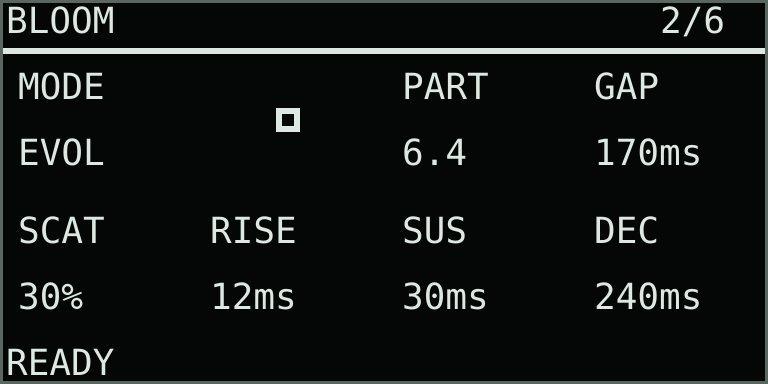
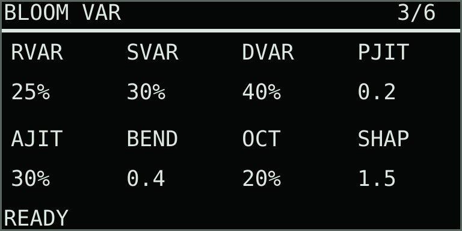
| Knob | Display | What it controls |
|---|---|---|
| 1 | MODE | FIX uses the chosen spectrum. EVOL moves A → B → C → D across the file. RAND chooses a spectrum for each packet. |
| 2 | SPEC | Fixed spectrum A–D. Available in FIX. |
| 3 | PART | Number of components, 1–8. Fractional values fade in the next component. |
| 4 | GAP | Average time between packet starts, 50–1000 ms, before spacing curves or modulation. |
| 5 | SCAT | Random variation of the start interval. |
| 6 | RISE | Base rise time, 2–200 ms. |
| 7 | SUS | Base sustain time, 0–200 ms. |
| 8 | DEC | Base decay time, 20–2000 ms. |
| Knob | Display | What it controls on Bloom Var |
|---|---|---|
| 1 | RVAR | Random rise variation around RISE. For example, 20% around 10 ms gives 8–12 ms, within the allowed time range. |
| 2 | SVAR | Random sustain variation around SUS. |
| 3 | DVAR | Random decay variation around DEC. |
| 4 | PJIT | Random packet pitch offset, up to ±1 semitone. |
| 5 | AJIT | Random packet-level reduction. Zero keeps levels even. |
| 6 | BEND | Upward pitch bend across a packet, up to one semitone. |
| 7 | OCT | Lower-octave reinforcement. |
| 8 | SHAP | Rise and decay curvature, 0.25–4. A short edge fade remains in place. |
WID spreads packets across stereo. The curve rows are Pitch / Partials / Spacing / Level. Pitch, spectrum, component count and spacing are evaluated for each packet; its tail continues independently. Spacing offsets of +1 double the interval and −1 halve it. Density is bounded to at most 32 overlapping packet envelopes.
Edit the spectra
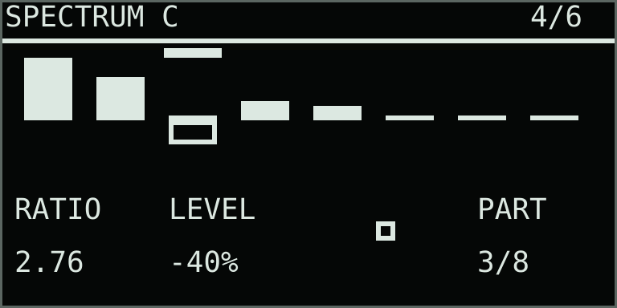
Open the Spectrum page before using the pads to edit partials. Dial 5 sets the selected component's frequency ratio, 1–64 times ROOT; hold Shift for finer changes. Dial 6 sets its signed level, −100% to +100%. Dial 8 selects components 1–8. Dial 7 is reserved. In FIX, selecting a spectrum also auditions that choice.
Delete + pad mutes a component. Copy + pad copies its ratio and level; Shift + pad pastes them. On other Synth pages, the pads continue to select the four motion curves.
Resynth
Resynth rebuilds a saved lane sample. PVOC retains the broader spectrum and supports pitch-independent stretching. SINE rebuilds the strongest tracked partials; it emphasizes pitched content and does not reproduce noise or attacks as faithfully.
- Load or record a sample into a lane. Wait for its save to finish.
- Choose RSYN with TYPE. Press the Track key for the source lane.
- Click the main encoder and select Use Lane as Source.
- Set the source window and processing. LEN on Setup sets the output duration independently of TUNE.
- Press Loop to audition. Choose Save, or select a destination with Track and choose Save & Load.
Once selected, the source stays fixed while other lanes are selected for saving. Choose Use Lane as Source again to replace it. The original file is preserved. Sources use the first twelve seconds and are converted to Move's sample rate when needed.
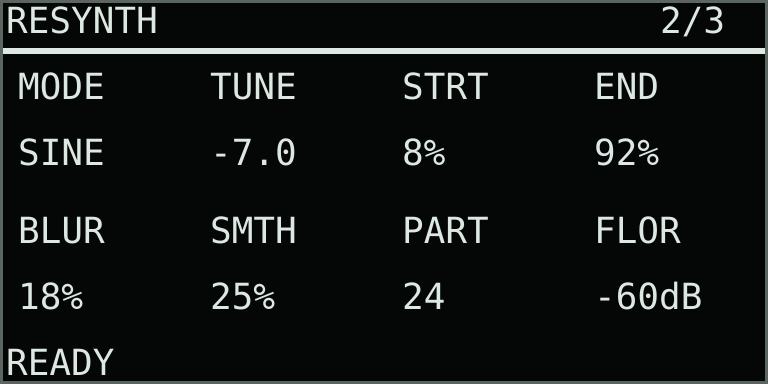
| Knob | Display | What it controls |
|---|---|---|
| 1 | MODE | PVOC spectral resynthesis or SINE partial tracking. |
| 2 | TUNE | Pitch shift, −24 to +24 semitones. Changing LEN does not change this pitch setting. |
| 3 | STRT | Start of the input window, as a percentage of the captured source. |
| 4 | END | End of the input window. STRT and END remain at least 1% apart. |
| 5 | BLUR | Spread spectral detail across neighboring frequencies. |
| 6 | SMTH | Slow changes of spectral level over time. |
| 7 | PART | Maximum tracked partial count, 4–64. Available in SINE. |
| 8 | FLOR | Spectral floor, −96 to −6 dB relative to the frame peak. Higher settings discard more quiet detail. |
The curve rows are Pitch / Blur / Smooth / Level. ROOT is the pitch reference written into the resulting WAV; TUNE changes the sound. WID begins at 100% for a new Resynth workspace to preserve stereo; zero sums the channels to mono.
A saved Resynth WAV embeds its original input as well as its recipe. Open Source Recipe can therefore reconstruct the result after the original file has been removed or the project has been imported elsewhere. These WAVs can be larger than other generated files.
RSYN Trace
Choose SINE on Resynth to reveal the Trace page in Sound. LINK follows changing partials continuously. POINT makes separate windowed partial events; SMEAR overlaps longer versions of them; FREEZ repeatedly draws from the analysis position selected by HOLD. The Resynth source window, tuning, floor, blur and smoothing still apply.


| Knob | Display | What it controls |
|---|---|---|
| 1 | TRCE | Behaviour: LINK, POINT, SMEAR or FREEZ. |
| 2 | DENS | Proportion of admitted partial traces, 0–100%. Zero makes a silent render. |
| 3 | LIFE | Base partial-event length, 10–2000 ms. SMEAR lengthens it by 2.8×; FREEZ by 7.5×. LEN bounds the saved result. Unavailable in LINK. |
| 4 | DRFT | Smooth pitch drift within traces. |
| 5 | JITR | Partial-event timing variation. Unavailable in LINK. |
| 6 | TOL | Linked-track matching tolerance, 10–600 cents. Available only in LINK. |
| 7 | HOLD | Analysis position inside the selected source window, 0–100%. Available only in FREEZ. |
| 8 | SPRD | Additional seeded placement of partials across stereo, scaled by WID. Unavailable at WID zero. |

These are offline treatments: changing a control renders a new preview. A saved Resynth WAV includes its source, so its trace behaviour can be recalled later.
Hybrid
HYBR combines the spectral traits of two to four recordings. It analyzes their partials, assigns timing, pitch and amplitude roles, then makes new windowed oscillator and noise material. This creates a new sample rather than mixing the original files directly.
- Choose HYBR, then set SRCS on the Hybrid sound page.
- Click the main encoder and choose Pick Source A, then B, and C/D if required. Each selection returns to Hybrid Files. It does not replace a lane sample.
- Choose MODE and processing. Loop auditions the completed render.
- Set a name and destination, then press Record to save and load, or Shift + Record to save only.

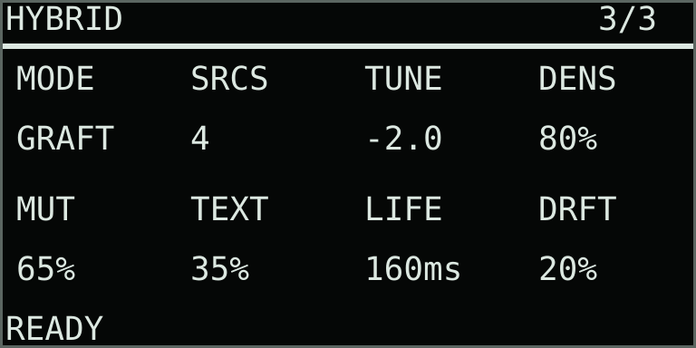
| Knob | Display | What it controls |
|---|---|---|
| 1 | MODE | CHIM independently exchanges traits; GRAFT uses A’s timing and B’s pitch; MASK admits A’s peaks where B has nearby frequencies; MIRAG favors A’s timing with changing traits; SWARM cycles roles across the sources. |
| 2 | SRCS | Required source count, 2–4. Change this before choosing additional files. |
| 3 | TUNE | Pitch offset for the resynthesized material, −24 to +24 semitones. |
| 4 | DENS | Proportion of admitted partial events. Zero makes a silent render. |
| 5 | MUT | Cross-source role mutation. In MASK, it widens the frequency-match tolerance. |
| 6 | TEXT | Blend toward shorter, noisier partial events instead of a strongly tonal result. |
| 7 | LIFE | Base partial-event length, 20–2000 ms. TEXT shortens it; LEN controls the whole output file. |
| 8 | DRFT | Pitch movement within each partial event. |
The curve rows are Pitch / Density / Mutation / Level. WID controls the complete stereo image; zero produces mono. MASK can be quiet or silent when the inputs have no matching spectral components. Start with CHIM or GRAFT when learning the processor.
Saved Hybrid WAVs embed every active source. Open Source Recipe and project export/import therefore work after the original files are removed. These self-contained files can be larger than ordinary generated samples.
Convolution
CONV combines a primary recording with an impulse recording to make a new stereo sample. The impulse can be a room response, a short attack, a resonant object, another musical sample or the same file as the primary. Processing happens in the background.
- Select CONV, then open the Convolution Files page in Sound.
- Click the main encoder and choose Pick Primary. Browse the usual sample sources and click a WAV to select it.
- Choose Pick Impulse the same way. Choosing either input leaves the audio lanes unchanged. Menu cancels the picker.
- Set the two regions, impulse window and processing on Convolve. Press Loop to audition the result.
- Choose the destination lane with Track 1–4, then press Record to save and load the result.
Each file selection returns to Synth and shows the chosen filename on Convolve Files. Once both files are selected, rendering starts automatically. Press Loop to audition the combined result.
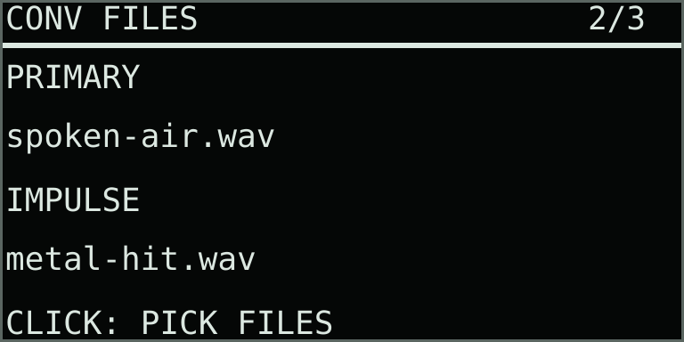

| Knob | Display | What it controls |
|---|---|---|
| 1 | PPOS | Start position in the primary file, 0–99.99%. |
| 2 | PLEN | Primary region length, 1–12000 ms, or the remaining audio if shorter. |
| 3 | IPOS | Start position in the impulse file, 0–99.99%. |
| 4 | ILEN | Impulse region length, 0.05–12000 ms. The first starting point uses up to one second. |
| 5 | WIN | Impulse envelope: FLAT leaves it unchanged, TRI and HANN taper both ends, EXP emphasizes the beginning and decays to the end. |
| 6 | TONE | Impulse brightness. Positive values emphasize changes and high frequencies; negative values soften the impulse. |
| 7 | MIX | Blend primary audio with the convolved result. The wet signal is peak-matched before blending; LVL sets the final peak. |
| 8 | TAIL | FULL keeps the convolution tail up to MAX. TRIM ends at the primary region length, also limited by MAX. |
Each source uses its first twelve seconds and is converted to Move's sample rate when needed. MAX on Setup defaults to 12 seconds, matching a Thru lane's capacity. Output shows the completed duration. LOOP uses a short overlapping seam and slightly shortens the result.
Stereo processing pairs primary left with impulse left, and primary right with impulse right. A mono file feeds both channels. WID applies to the whole dry/wet result; zero produces mono. Only the Level curve and Level modulation apply to Convolution.
Saved convolution WAVs include both captured inputs and the recipe. Open Source Recipe rebuilds the result without the original files. Project export preserves these embedded inputs when the saved WAV is assigned to a lane. The source files are preserved.
Compose events into a sample
Drum, Bloom, Partials and Pluck share two Events pages in Sound. MODE OFF keeps the ordinary generator. GRID starts from clear musical spacing, with timing, pitch and level variation off. Events is enabled initially for Pluck.
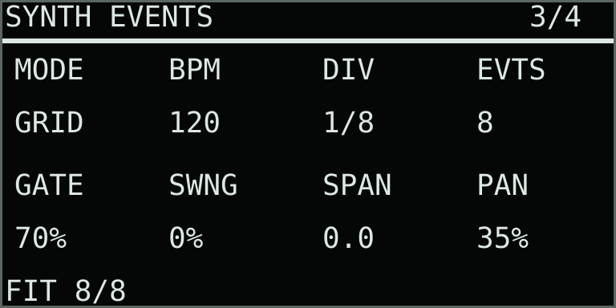
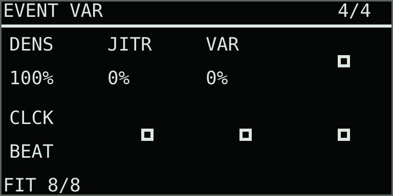
| Knob | Display | What it controls |
|---|---|---|
| 1 | MODE | OFF; GRID for every candidate; CHANC for probabilistic grid hits; SWELL for soft envelopes; GROUP for three hits followed by a rest. |
| 2 | BPM | Render tempo, 1–999 BPM, independent of clip playback. A beat is a quarter note. |
| 3 | DIV | Spacing: whole notes through 1/64, with triplet (T) and dotted (D) choices. At 120 BPM, 1/8 places starts every 250 ms. |
| 4 | EVTS | Candidate count, 1–64. LEN on Setup limits the finished file. The footer shows how many candidates fit, such as FIT 8/16. |
| 5 | GATE | Event length relative to DIV, 5–400%. At 120 BPM, DIV 1/8 and GATE 70% give 175 ms of material followed by a 75 ms gap. Above 100%, events can overlap. |
| 6 | SWNG | Delays alternate grid positions without changing the overall tempo. Zero gives straight spacing. |
| 7 | SPAN | Optional scale-based pitch range, 0–48 semitones. Zero keeps one pitch; model tuning limits still apply. |
| 8 | PAN | Optional stereo placement of events, scaled by WID. Unavailable at WID zero. |
Event Var
| Knob | Display | What it controls |
|---|---|---|
| 1 | DENS | Admission probability. GRID at 100% admits every candidate; CHANC also applies its own 75% chance. GROUP keeps its regular rest. |
| 2 | JITR | Humanization around the grid. Zero is exact; 100% allows at most one tenth of the spacing in either direction. Neighbouring events remain ordered. |
| 3 | VAR | Random level reduction. Zero keeps levels even. |
| 4 | □ | Reserved. |
| 5 | CLCK | BEAT uses BPM, DIV, GATE and SWNG. FREE spaces EVTS evenly across LEN and uses LIFE in milliseconds. |
| 6 | LIFE | Event length in FREE clock, 40–4000 ms. Unavailable in BEAT clock. |
| 7 | □ | Reserved. |
| 8 | □ | Reserved. |
Change LEN on Setup to fit more or fewer beats, up to twelve seconds. For example, LEN 2 seconds, BPM 120, DIV 1/8 and EVTS 8 make one bar of eight equally spaced starts. Raising EVTS beyond the file’s capacity does not squeeze the events together: FIT reports the number that can be rendered. Triplets and dotted notes retain their proper timing.
Pitch curves are sampled at event starts. Partials also samples Count and Stretch; Bloom samples partial count and spacing; Pluck samples Damping and Brightness. Drum’s rows become Pitch / Density / Lifetime / Level; a +1 Lifetime offset doubles the event gate. Model DEC acts inside that gate. Short gates fade to silence at their boundaries, including when shorter than the generator’s material window. SEED repeats optional variations; New Seed makes another variation. Level follows the complete render.
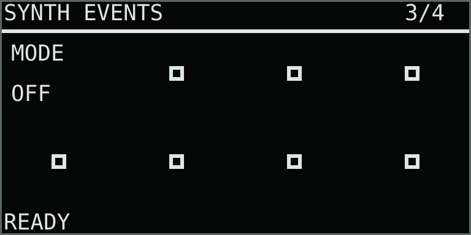
Shared modulation
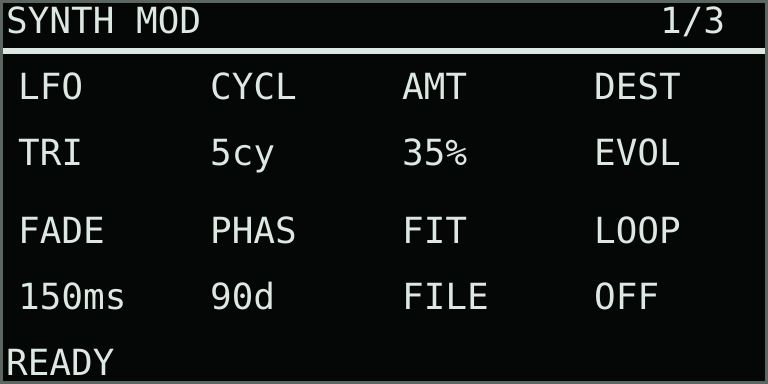
| Knob | Display | What it controls |
|---|---|---|
| 1 | LFO | SINE, TRI, SAW, SQR or smoothly changing RAND. |
| 2 | RATE / CYCL | FREE rate, 0.01–40 Hz, or 1–64 complete cycles across the file when FIT is FILE. |
| 3 | AMT | Depth. Zero adds no LFO movement. |
| 4 | DEST | OFF, pitch, either of the generator's two middle curve targets, or level. |
| 5 | FADE | Time for the LFO depth to rise from zero, 0–12 seconds. |
| 6 | PHAS | Starting phase, 0–360 degrees. |
| 7 | FIT | FREE uses Hz. FILE fits the chosen number of cycles into LEN. |
| 8 | LOOP | Prepare the WAV with an overlapping loop seam. When enabled, one-shot ATK and REL are unavailable. |
Inactive destinations and controls show squares. LFO and authored curves add together, with bounded values and smoothing where needed. Bloom applies its pitch, component-count and spacing modulation at packet starts; level modulation acts across the mixed result.
Clean
Choose Clean in Synth Actions to remove optional movement. It clears the four curves and LFO, and preserves length, root, file envelope, level, loop choice and filename. Wave keeps the selected waveform and resets extra oscillators, noise and filtering. Spline keeps its waveform-shaping controls and clears pitch drift and random dynamics. Bloom keeps its edited spectra and base envelope, selects FIX, and clears scatter, jitter and octave reinforcement. Resynth returns to a full-window, pitch-neutral PVOC starting point with the original stereo width. Partials keeps its edited components, count, tilt and stretch, and clears detuning, phase variation, drift and component decay. Noise Bank keeps its band tuning, levels, width and color, and clears movement and leak. Dust keeps mode, rate, size, tone and edge; Clean removes the added bed, clustering, variation and faults, selects white noise, one repeat and 24-bit depth. FM keeps its core routing, ratios, indices and mix, and clears feedback and detuning. Convolution resets TONE and MIX while retaining its files, regions and window. Drum resets Color and clears DRIV, BIAS, COMP and SNAP while retaining its model, native excitation controls and timbre. Pluck clears hardness and detuning; Subharmonic clears detuning and drift; Hybrid clears role mutation and drift. Trace clears drift, jitter and spread. Events keeps its mode, count, density and lifetime while clearing timing jitter, pitch spread, level variation and pan.
Compose four curves on the pads
Outside Bloom’s Spectrum page and the Partials/Noise Bank component editors, the four horizontal pad rows select the generator’s four curves, from top to bottom. Spline uses Pitch / Points / Evolution / Level; the other generators’ targets are described above. Each row contains eight points in time order, left to right. Tap a pad to enable and select its point. The display switches to its curve.
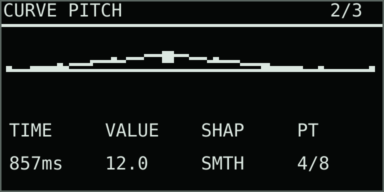
| Knob | Display | What it controls |
|---|---|---|
| 5 | TIME | Move the selected point in time within LEN, independently of its pad column. Interior points stay between their neighbors. The fixed start/end points show an unavailable square. |
| 6 | VALUE | Offset from the base parameter. Pitch is ±24 semitones and Level ±24 dB. Spline Points is ±16 and Evolution ±4 octaves of time. Wave Pulse Width is ±45 percentage points and Cutoff ±4 octaves. Bloom Partials is ±7 and Spacing ±4 octaves. Resynth Blur and Smooth are ±100 percentage points. Final values remain bounded. |
| 7 | SHAP | Shape from this point to the next: HOLD, LIN or SMTH. Unavailable at the final point, which has no following segment. Level changes are additionally smoothed to reduce clicks. |
| 8 | PT | Turn to select points 1–8 across the current pad row. The cyan pad and waveform marker follow. Selecting an unused point leaves the curve unchanged; editing its TIME, VALUE or SHAP enables it. |
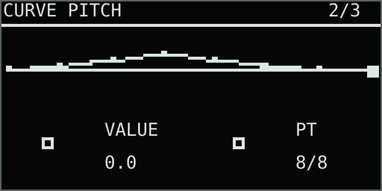
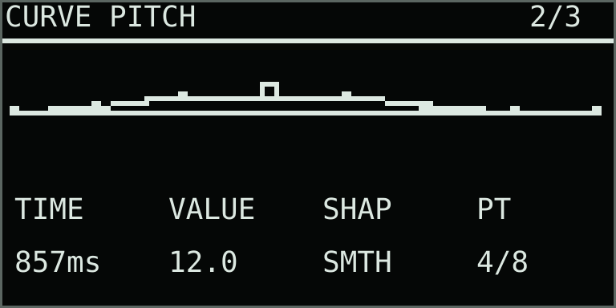
Delete/X + pad removes an interior point. At the endpoints it resets the value to zero. Copy + pad copies a point's value and shape; Shift + pad pastes them, keeping the destination time. These pad shortcuts edit curves while Synth is open.
Bounded randomization
Shift + Loop applies Mutate Sound from any Synth page, for every generator. It uses the Random page’s AMT (initially 25%) and respects Protect Params. The page and preview selection stay in place; the updated sound renders in the background. AMT zero makes no change. Release the keys before repeating. The shortcut is inactive inside menus, filename entry and source-file browsing. Loop alone still toggles audition. No file is saved until you choose Save or press Record.
The Random page sets AMT, curve ROW, MIN, MAX and whether ENDS are kept. Click the main encoder to choose Random Curve, Mutate Sound, New Seed or Protect Params.
- Random Curve moves points toward random targets inside MIN/MAX. Pitch targets follow the scale captured when the workspace was first opened. AMT blends toward the targets; KEEP leaves endpoint values intact.
- Mutate Sound varies unprotected sound controls by AMT. Setup controls, envelope, output level, pitch drift and LOOP start protected.
- Protect Params lists the selected generator’s controls, including its event or trace controls. Turn the main encoder to select one; click to toggle LOCKED/FREE. Back returns to the editor.
- New Seed advances the random identity without changing the control values or curves. Mutation and curve randomization also advance the seed. AMT zero leaves the recipe unchanged.
Name, save and recall
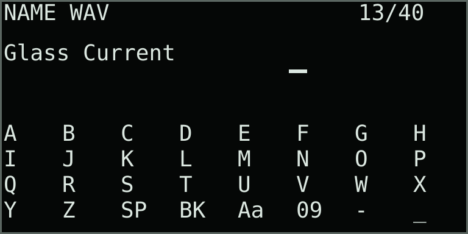
Choose Name in the action menu to use the pad keyboard. Names support up to forty letters, numbers, spaces, dashes and underscores. SP inserts a space, BK removes the previous character, Aa changes case, and 09 selects digits.
Save writes a new stereo 32-bit-float WAV at Move's sample rate. Save & Load also assigns it to the Track-selected lane. Existing files are preserved: a repeated name receives a numeric suffix. Saving requires a completed render of the current settings.
Saved - Load Error means the WAV was saved but could not be applied to the lane. The file remains available; resolve the load error and choose it again through the sample browser.
Files appear at UserLibrary/Samples/s3g Thru/Synths, also available as Thru Synths in the sample browser. Download them through Schwung Manager's Files page. If a clip changes while saving, the file is retained without loading it into the new clip.
Each WAV carries its generator type and recipe. Load a generated WAV into a lane, open Synth and choose Open Source Recipe to edit it again. A project export preserves the recipe with every referenced generated WAV. Resynth’s embedded original input travels with its saved WAV. Unassigned files and unsaved workspaces are not included in project backups; save and assign sounds you want to keep.